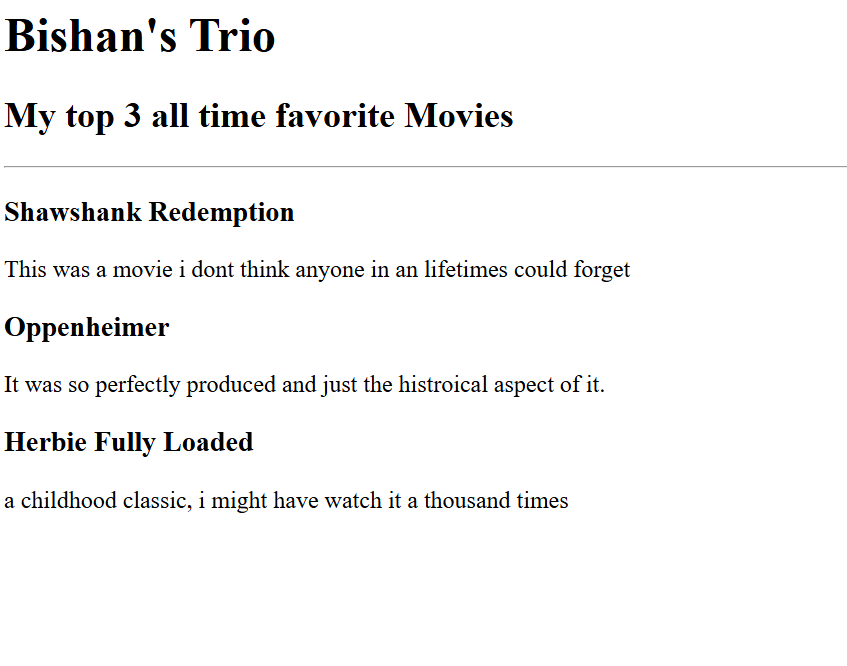

Bishan M Hewagama

Inspired Web Developer
Summary
Passionate and motivated web developer with a strong foundation
in MERN stack, Java, HTML, CSS, and JavaScript. Enthusiastic about
building user-friendly web applications and continuously learning new
technologies. A team player with a problem-solving mindset, eager to
contribute and grow in a dynamic development environment.
Education
- software engineering
- Computer Science
Work Experience
Intern QA Engineer
-
Mr Richard Dixon - March 2021
- Test Panning & Strategy
- Manual & Automated Testing
- Bug Identification & Reporting
Intern Web Developer
-
Ms Sarah Rogers - August 2023
- Frontend Development
- Backed Development
- Version Control
Skills
- Html
- CSS
- JavaScript
- SQL
- DevOps
Acomplishments
